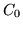

The final stage of data preparation is to parameterise the raw speech waveforms into sequences of feature vectors. HTK support both FFT-based and LPC-based analysis. Here Mel Frequency Cepstral Coefficients (MFCCs) , which are derived from FFT-based log spectra, will be used.
Coding can be performed using the tool HCOPY configured to automatically convert its input into MFCC vectors. To do this, a configuration file (config) is needed which specifies all of the conversion parameters . Reasonable settings for these are as follows
# Coding parameters
TARGETKIND = MFCC_0
TARGETRATE = 100000.0
SAVECOMPRESSED = T
SAVEWITHCRC = T
WINDOWSIZE = 250000.0
USEHAMMING = T
PREEMCOEF = 0.97
NUMCHANS = 26
CEPLIFTER = 22
NUMCEPS = 12
ENORMALISE = F
Some of these settings are in fact the default setting, but they
are given explicitly here for completeness. In brief, they specify
that the target parameters are to be MFCC using  as the energy
component, the frame period is 10msec (HTK uses units of 100ns),
the output should be saved in compressed format, and a crc checksum should
be added. The FFT should use a Hamming window and the signal should
have first order preemphasis applied using a coefficient of 0.97.
The filterbank should have 26 channels and 12 MFCC coefficients should
be output.
The variable ENORMALISE is by default true and performs energy
normalisation on recorded audio files. It cannot be used with live audio and
since the target system is for live audio, this variable should be set to
false.
Note that explicitly creating coded data files is not necessary, as coding can be done "on-the-fly" from the original waveform files by specifying the appropriate configuration file (as above) with the relevant HTK tools. However, creating these files reduces the amount of preprocessing required during training, which itself can be a time-consuming process.
To run HCOPY, a list of each source file and its corresponding output file is needed. For example, the first few lines might look like
/root/sjy/waves/S0001.wav /root/sjy/train/S0001.mfc
/root/sjy/waves/S0002.wav /root/sjy/train/S0002.mfc
/root/sjy/waves/S0003.wav /root/sjy/train/S0003.mfc
/root/sjy/waves/S0004.wav /root/sjy/train/S0004.mfc
(etc.)
Files containing lists of files are referred to as script files3.3and
by convention are given the extension scp (although
HTK does not demand this). Script files are specified using the standard
-S option and their contents are read simply as extensions
to the command line. Thus, they avoid the need for command lines with
several thousand arguments3.4.
Assuming that the above script is stored in the file codetr.scp, the training data would be coded by executing
HCopy -T 1 -C config -S codetr.scp
This is illustrated in Fig. [*]. A similar procedure is
used to code the test data (using TARGETKIND = MFCC_0_D_A in
config) after which all of the pieces are in place to start training
the HMMs.